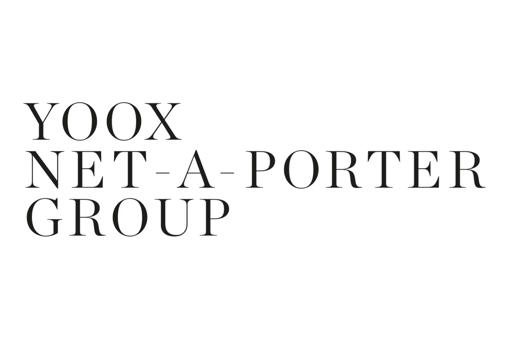
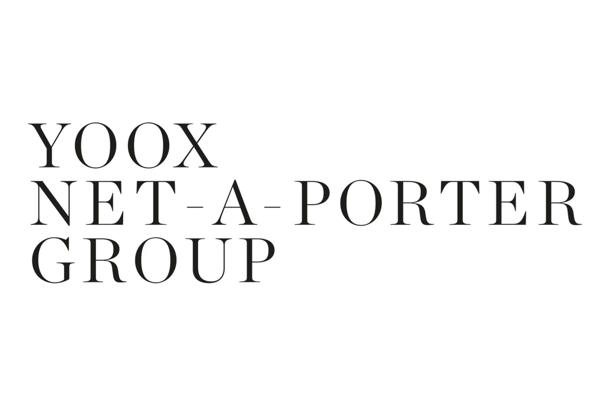

Esaadi's knowledge in administrative-based fashion roles is rooted in his experience as a Marketing Assistant for the fashion conglomerates Arab-wide operations, overseeing PR and Marketing activities across Net-A-Porter, Mr Porter, YOOX and The Outernet. Responsibilites included the liaison of products, assets and materials between the UK and UAE offices, overseeing itineraries and product listings across gifting, editorial loans and offline activations for key clients and industry figures in the region, as well as developing weekly and monthly progress reports of brand placements and outreach.